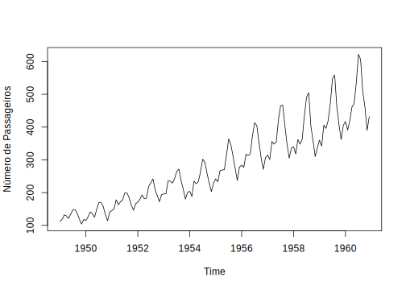
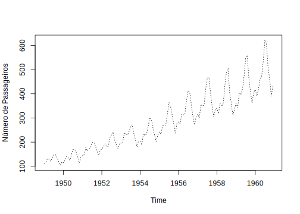

5.3 Parâmetros gráficos, parte II - Símbolos e cores
Você pode fazer o que quiser na produção de um gráfico no R.
Isso requer conhecer bem os parâmetros gráficos que já apresentamos de forma geral anteriormente (ver seção 5.2).
Aqui apresentamos alguns parâmetros de uso comum pelas funções gráficas de alto (Seção 5.4) e baixo nível (seção 5.5), que definem símbolos e cores.
Você viu isso se leu o ? da função par() e entendeu o que ela faz.
Em gráficos de dispersão e/ou na necessidade de colocar qualquer símbolo em um gráfico qualquer, precisamos saber como definir símbolos, suas cores e seus tamanhos. Os parâmetros gráficos que fazem isso são principalmente os seguintes:
pch- define o tipo de símbolo para pontos;lty- define o tipo de símbolo para linhas;colebg- respectivamente definem a cor de linhas e o “recheio” do ponto de símbolos, gráficos, polígonos etc;cex- define o tamanho de símbolos e texto;lwd- espessura das linhas.
5.3.1 Tipo de símbolo - pch
Nós queremos símbolos, em geral, para adicionar em um gráfico os pontos referentes às nossas unidades amostrais.
Portanto, esse tipo de símbolo no R é chamado de points, e já vimos a função de baixo-nível points(), que depende desse argumento ou parâmetro.
O argumento pch pode ser um número3, que especifica um símbolo, ou símbolos de um único caractere [e.g. c("A", "*","&", "?")].
# veja o definido como parâmetro global
par("pch")
# o que isso quer dizer?
# vamos usar a função example()
?example # se quiser saber o que isso faz
# quando digitar o comando abaixo,
# vai precisar RESPONDER NO CONSOLE para prosseguir.
example("points")
# pare na terceira figura que esse exemplo gera.
par("pch") # este valor corresponde ao símbolo nessa figura.
# note que os símbolos de 21:25 permitem definir cor de linha e de recheiro, os demais apenas uma única cor# vamos gerar alguns exemplos com os dados de iris
class(iris)## [1] "data.frame"dim(iris)## [1] 150 5colnames(iris)## [1] "Sepal.Length" "Sepal.Width" "Petal.Length" "Petal.Width" "Species"# com a definicao padrão de pch
par("pch")## [1] 1Sepalas <- iris$Sepal.Length
Petalas <- iris$Petal.Length
plot(Sepalas, Petalas)# colocando todas com um único símbolo diferente
plot(Sepalas, Petalas, pch = 25)# colocando cada espécie com um único símbolo
# neste caso o argumento pch deve ter um vetor do número de linhas em iris, se for menor, pela regra da reciclagem, ele irá repetir os símbolo sem estar relacionado à coluna Species, que define qual linha é de qual espécie.
# então se eu definir apenas três simbolos, um para cada espécie:
plot(Sepalas, Petalas, pch = c("A", "&", "+"))# eles vao aparecer misturados, isso não está de acordo com as espécies
# uma forma rápida de fazer isso, tendo em vista que o pch pode ser um valor numérico,
# é transformar o nome das minhas especies em números.
# Eu posso fazer isso se convertendo um fator para número, pois nele as categorias estão explicitamente definidas
spp <- iris$Species
class(spp) # já é um fator## [1] "factor"# note que isso gera muitos NAs, já vimos isso antes
as.numeric(as.vector(spp))## Warning: NAs introduced by coercion## [1] NA NA NA NA NA NA NA NA NA NA NA NA NA NA NA NA NA NA NA NA NA NA NA NA NA
## [26] NA NA NA NA NA NA NA NA NA NA NA NA NA NA NA NA NA NA NA NA NA NA NA NA NA
## [51] NA NA NA NA NA NA NA NA NA NA NA NA NA NA NA NA NA NA NA NA NA NA NA NA NA
## [76] NA NA NA NA NA NA NA NA NA NA NA NA NA NA NA NA NA NA NA NA NA NA NA NA NA
## [101] NA NA NA NA NA NA NA NA NA NA NA NA NA NA NA NA NA NA NA NA NA NA NA NA NA
## [126] NA NA NA NA NA NA NA NA NA NA NA NA NA NA NA NA NA NA NA NA NA NA NA NA NA# mas isso gera números por spp é um fator
as.numeric(spp)## [1] 1 1 1 1 1 1 1 1 1 1 1 1 1 1 1 1 1 1 1 1 1 1 1 1 1 1 1 1 1 1 1 1 1 1 1 1 1
## [38] 1 1 1 1 1 1 1 1 1 1 1 1 1 2 2 2 2 2 2 2 2 2 2 2 2 2 2 2 2 2 2 2 2 2 2 2 2
## [75] 2 2 2 2 2 2 2 2 2 2 2 2 2 2 2 2 2 2 2 2 2 2 2 2 2 2 3 3 3 3 3 3 3 3 3 3 3
## [112] 3 3 3 3 3 3 3 3 3 3 3 3 3 3 3 3 3 3 3 3 3 3 3 3 3 3 3 3 3 3 3 3 3 3 3 3 3
## [149] 3 3# então se eu quero os símbolos 22,23,25 para representar minhas espécies, eu uso esses números para pegar esses valores pelos índices de um vetor:
pch.das.spp <- c(21, 23, 25)[as.numeric(spp)]
pch.das.spp## [1] 21 21 21 21 21 21 21 21 21 21 21 21 21 21 21 21 21 21 21 21 21 21 21 21 21
## [26] 21 21 21 21 21 21 21 21 21 21 21 21 21 21 21 21 21 21 21 21 21 21 21 21 21
## [51] 23 23 23 23 23 23 23 23 23 23 23 23 23 23 23 23 23 23 23 23 23 23 23 23 23
## [76] 23 23 23 23 23 23 23 23 23 23 23 23 23 23 23 23 23 23 23 23 23 23 23 23 23
## [101] 25 25 25 25 25 25 25 25 25 25 25 25 25 25 25 25 25 25 25 25 25 25 25 25 25
## [126] 25 25 25 25 25 25 25 25 25 25 25 25 25 25 25 25 25 25 25 25 25 25 25 25 25# posso usar isso como argumento em plot:
plot(Sepalas, Petalas, pch = pch.das.spp)
# pronto cada espécie é um símbolo diferente5.3.2 Tamanho dos pontos - cex
O argumento genérico cex especifica o tamanho dos pontos relativo ao padrão do dispositivo.
Aceita um valor numérico que é multiplicado pelo valor do seu dispositivo.
O padrão geral é 1, isto é, 100% do tamanho.
Se colocar 0.5 teremos 50%; se 1.5, teremos 150% do tamanho padrão.
# da etapa anterior
pch.das.spp <- c(21, 23, 25)[as.numeric(spp)]
# temos nosso gráfico com símbolos
plot(Sepalas, Petalas, pch = pch.das.spp)
# mudando o tamanho de todos os simbolos
plot(Sepalas, Petalas, pch = pch.das.spp, cex = 0.5)# para maior
plot(Sepalas, Petalas, pch = pch.das.spp, cex = 1.5)# um tamanho diferente por ponto (especie)
tm <- c(0.5, 1, 1.5)[as.numeric(spp)]
tm## [1] 0.5 0.5 0.5 0.5 0.5 0.5 0.5 0.5 0.5 0.5 0.5 0.5 0.5 0.5 0.5 0.5 0.5 0.5
## [19] 0.5 0.5 0.5 0.5 0.5 0.5 0.5 0.5 0.5 0.5 0.5 0.5 0.5 0.5 0.5 0.5 0.5 0.5
## [37] 0.5 0.5 0.5 0.5 0.5 0.5 0.5 0.5 0.5 0.5 0.5 0.5 0.5 0.5 1.0 1.0 1.0 1.0
## [55] 1.0 1.0 1.0 1.0 1.0 1.0 1.0 1.0 1.0 1.0 1.0 1.0 1.0 1.0 1.0 1.0 1.0 1.0
## [73] 1.0 1.0 1.0 1.0 1.0 1.0 1.0 1.0 1.0 1.0 1.0 1.0 1.0 1.0 1.0 1.0 1.0 1.0
## [91] 1.0 1.0 1.0 1.0 1.0 1.0 1.0 1.0 1.0 1.0 1.5 1.5 1.5 1.5 1.5 1.5 1.5 1.5
## [109] 1.5 1.5 1.5 1.5 1.5 1.5 1.5 1.5 1.5 1.5 1.5 1.5 1.5 1.5 1.5 1.5 1.5 1.5
## [127] 1.5 1.5 1.5 1.5 1.5 1.5 1.5 1.5 1.5 1.5 1.5 1.5 1.5 1.5 1.5 1.5 1.5 1.5
## [145] 1.5 1.5 1.5 1.5 1.5 1.5plot(Sepalas, Petalas, pch = pch.das.spp, cex = tm)5.3.3 Linhas
Os argumentos lwd e lty controlam a espessura e o tipo das linhas, respectivamente.
data("AirPassengers") # veja esse conjunto de dados com ?datasets
class(AirPassengers)## [1] "ts"plot(AirPassengers, ylab = "Número de Passageiros")
# mudando o tipo de linha
plot(AirPassengers, ylab = "Número de Passageiros", lty = "dotted")
# outro tipo
plot(AirPassengers, ylab = "Número de Passageiros", lty = "dotdash")# mudando a cor e espessura
plot(AirPassengers, ylab = "Número de Passageiros", lty = "dashed", col = "red", lwd = 2)
5.3.4 Cores de símbolos - col e bg
O argumento col define cores para os símbolos. No caso de símbolos de uma única cor, utilizamos apenas este argumento.
Já o argumento bg define as cores do preenchimento dos símbolos.
# o que definimos antes são símbolos que permitem definir cores para preenchimento e linha:
pch.das.spp <- c(21, 23, 25)[as.numeric(spp)]
# temos nosso gráfico com símbolos
plot(Sepalas, Petalas, pch = pch.das.spp)# vamos adicionar as cores seguindo o mesmo raciocínio
cores.spp <- c("red", "blue", "yellow")[as.numeric(spp)]
cores.spp## [1] "red" "red" "red" "red" "red" "red" "red" "red"
## [9] "red" "red" "red" "red" "red" "red" "red" "red"
## [17] "red" "red" "red" "red" "red" "red" "red" "red"
## [25] "red" "red" "red" "red" "red" "red" "red" "red"
## [33] "red" "red" "red" "red" "red" "red" "red" "red"
## [41] "red" "red" "red" "red" "red" "red" "red" "red"
## [49] "red" "red" "blue" "blue" "blue" "blue" "blue" "blue"
## [57] "blue" "blue" "blue" "blue" "blue" "blue" "blue" "blue"
## [65] "blue" "blue" "blue" "blue" "blue" "blue" "blue" "blue"
## [73] "blue" "blue" "blue" "blue" "blue" "blue" "blue" "blue"
## [81] "blue" "blue" "blue" "blue" "blue" "blue" "blue" "blue"
## [89] "blue" "blue" "blue" "blue" "blue" "blue" "blue" "blue"
## [97] "blue" "blue" "blue" "blue" "yellow" "yellow" "yellow" "yellow"
## [105] "yellow" "yellow" "yellow" "yellow" "yellow" "yellow" "yellow" "yellow"
## [113] "yellow" "yellow" "yellow" "yellow" "yellow" "yellow" "yellow" "yellow"
## [121] "yellow" "yellow" "yellow" "yellow" "yellow" "yellow" "yellow" "yellow"
## [129] "yellow" "yellow" "yellow" "yellow" "yellow" "yellow" "yellow" "yellow"
## [137] "yellow" "yellow" "yellow" "yellow" "yellow" "yellow" "yellow" "yellow"
## [145] "yellow" "yellow" "yellow" "yellow" "yellow" "yellow"plot(Sepalas, Petalas, pch = pch.das.spp, bg = cores.spp)# podemos mudar a cor da linha desses simbolos (todos para verde pela regra da reciclagem especifico uma única vez)
plot(Sepalas, Petalas, pch = pch.das.spp, bg = cores.spp, col = "green")# mudando simbolos
nsb <- c("*", "#", "+")[as.numeric(spp)]
plot(Sepalas, Petalas, pch = nsb, bg = cores.spp)# note que apesar de bg estar especificando cores as cores nao foram adicionadas, porque colocamos no argumento de preenchimento.
# Mudando:
plot(Sepalas, Petalas, pch = nsb, col = cores.spp)5.3.5 Funções que definem cores
Cores podem ser definidas por palavras ou por códigos.
As funções colors() ou colours() listam cores pelo nome.
# lista todas as cores disponíveis pelo nome
colors()
# nossa tem 657 cores. Difícil, né?
# reduz para as mais distintas
colors(distinct = TRUE)
# ainda 502# eu posso pegar ou buscar por cores
ascores <- colors(distinct = TRUE)
vl <- grep("blue", ascores)
ascores[vl]
# 60 nomes que contém a palavra azul
# vamos ver todas as coresem umpdf longo
# vamos plotar pizzas coloridas com 10 cores cada
# 4 pizzas por página?pie # veja o help dessa função# abre um PDF
pdf("cores.pdf", width = lcm(29), height = lcm(21))
# vamos dividir o dispositivo em 2 colunas e 3 linhas (e diminuir a margem)
par(mfrow = c(2, 2), mar = c(3, 3, 3, 3), cex = 0.7)
ln <- length(ascores)
ln # sao 502 cores
ceiling(ln / 10) # , entao serao 51 pizzas
# plota cada pizza fazendo uma iteração:
idx <- 0 # o objeto nullo para usar de indice na iteracao para fazer de 10 em 10
for (p in 1:ceiling(ln / 10)) {
de <- idx + 1 # cor do indice idx
ate <- idx + 10 # ate cor do indice idx+10
cls <- ascores[de:ate] # cores da pizza da iteracao p
pie(rep(1, 10), col = cls, labels = cls)
idx <- ate
}
dev.off() # fecha o pdfAs funções rainbow() ou terrain.colors() geram gradientes de cores em um padrão definido.
# 10 cores do arco-iris
cls <- rainbow(n = 10)
pie(rep(1, 10), col = cls, labels = cls)# 12 cores do arco-iris com 50% de transparencia
cls <- rainbow(n = 12, alpha = 0.5)
pie(rep(1, 12), col = cls, labels = cls)# 12 cores do arco-iris, limitando o espectro
cls <- rainbow(n = 12, start = 0.1, end = 0.9)
pie(rep(1, 12), col = cls, labels = cls)# 10 cores quentes
cls <- heat.colors(n = 10, alpha = 1)
pie(rep(1, 10), col = cls, labels = cls)# 20 cores topográficas
cls <- topo.colors(n = 20, alpha = 1)
pie(rep(1, 20), col = cls, labels = cls)# ou melhor
cls <- terrain.colors(n = 20, alpha = 1)
pie(rep(1, 20), col = cls, labels = cls)As funções rgb() ou hsv() geram qualquer tipo de cor para ser utilizados nos gráficos.
?rgb # veja o help dessa funcao e veja as funcoes sob See Also# podemos entender melhor fazendo o caminho inverso
defs <- col2rgb("yellow") # extraimos as especificacoes de amarelo (cores primárias ) pela palavra
defs| red | 255 |
| green | 255 |
| blue | 0 |
# sem cor temos preto
cls <- rgb(red = 0, green = 0, blue = 0) # fazemos amarelo
pie(1, col = cls, labels = cls)# fazemos amarelo
cls <- rgb(red = 255, green = 255, blue = 0, maxColorValue = 255)
pie(1, col = cls, labels = cls)# tiramos verde
cls <- rgb(red = 255, green = 160, blue = 0, maxColorValue = 255)
pie(1, col = cls, labels = cls)# tiramos verde e adicionamos azul
cls <- rgb(red = 255, green = 160, blue = 255, maxColorValue = 255)
pie(1, col = cls, labels = cls)# tiramos azul-escuro (mais perto de 0)
cls <- rgb(red = 0, green = 0, blue = 150, maxColorValue = 255)
pie(1, col = cls, labels = cls)# tiramos azul
cls <- rgb(red = 0, green = 0, blue = 255, maxColorValue = 255)
pie(1, col = cls, labels = cls)Valores do argumento
pchvariam de 0 a 25; veja o?da funçãopoints()para saber quais são esses símbolos↩︎